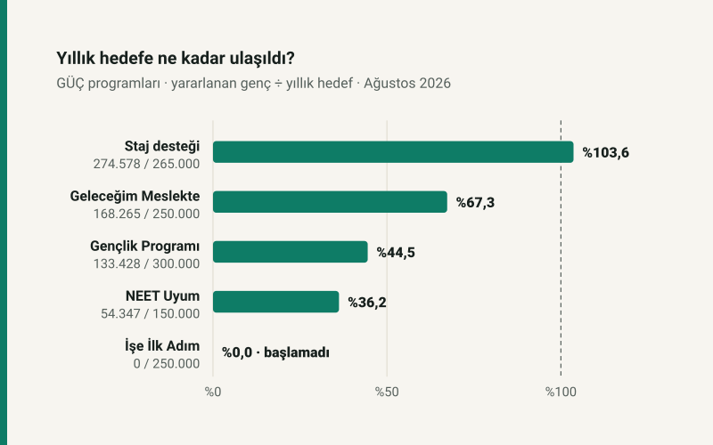

Kısa cevap
Ödeme ne? İŞKUR Gençlik Programı ve İşgücü Uyum Programı'nda katılınan her gün için 1.375 TL cep harçlığı. İzin ya da devamsızlık gününde ödeme yok. Haftada 3 gün katılan ayda 12–15 gün katılır; İŞKUR'un açıkladığı 19.250 TL 14 günün karşılığı.
Kim alabilir? Gençlik Programı yalnız devlet üniversitelerinin örgün öğrencilerine, NEET programı ne eğitimde ne istihdamda olan gençlere açık. İkisinde de hane geliri sınırı var: net asgari ücretin 3 ve 2 katı. Gençlik'te katılımcılar kurayla, İUP'de önce kadınlar ve engelliler gibi öncelikli gruplardan seçiliyor.
Emekliliğe sayılır mı? Hayır. Katılımcılar yalnız iş kazası ve meslek hastalığı ile genel sağlık sigortası kapsamında (5510 s.K. m.5/1-e); emeklilik primi ödenmiyor.
Paylaşımlarda ne deniyor, aslı ne?
| Paylaşımlarda | İŞKUR'un metninde |
|---|---|
| "Evde oturan gençlere maaş" | Katılımcı kamu kurumunda ya da üniversitesinde görev yapar; günde 7,5 saat, haftada 3 gün (NEET programında ilk dört hafta 5 gün). Katılmadığı gün için ödeme yok. |
| "Herkese ayda 19 bin TL" | Gün başına 1.375 TL. Ay ay 12–15 gün; ayda 14 gün katılan 19.250 TL alır. |
| "Maaş" | "Cep harçlığı". İzin günleri ödenmez; program en çok 10 ay sürer ve kişi bu programlardan toplamda en çok 140 fiili gün yararlanır. |
| "Öğrenci ve işsiz gençlere" | İki ayrı program: devlet üniversitesi örgün öğrencileri için Gençlik Programı (açık ve uzaktan öğretim hariç), eğitimde ve istihdamda olmayan gençler için NEET İşgücü Uyum Programı. |
| "25 yaşından küçük olmak" | İki programın katılım şartlarında üst yaş yok; şart 18 yaşını tamamlamış olmak. |
| "Sigortalı çalışma" | Yalnız iş kazası ve meslek hastalığı ile genel sağlık sigortası, %5,5 prim; emeklilik primi yok. |
| "Başvuran alır" | Kontenjanlı. Gençlik'te noter kurası; İUP'de önce özel politika listesi (kadınlar, engelliler, eski hükümlüler, Hane Bazlı İzleme Sistemi'ndekiler). |
| "İlk 6 ay maaşı devletten" | Başka bir program: İşe İlk Adım, özel sektörde ilk işine giren 18–25 yaş gençler için. GÜÇ portalında "çok yakında"; Ağustos 2026 itibarıyla yararlanan yok. |
GÜÇ'ün beş programı
"Gençliğin Üretim Çağı" (GÜÇ) tek bir ödeme değil, beş programdan oluşan bir çerçeve. Sosyal medyada "19 bin TL" diye birleştirilen şey, bunların ikisinin ortak günlük tutarı. Bir genç hangi programa girebileceğini durumuna göre bulur:
Kim hangi programa girer?
GÜÇ kapsamındaki beş program; Ağustos 2026 itibarıyla yararlanan genç sayısı.
Ay ay ne kadar?
Aynı gün başlayan iki genci karşılaştıralım: biri üniversiteli ve haftada 3 gün katılıyor, öbürü NEET programında. NEET programında ilk dört hafta haftada 5 gün katılınıyor; bu yüzden ilk ay belirgin biçimde yüksek, sonrası aynı.
İki genç, ay ay
2 Kasım 2026'da başlayan bir üniversiteli (haftada 3 gün) ve bir NEET programı katılımcısı.
İki şey öne çıkıyor. Birincisi aylık tutar sabit değil: pazartesi ve salıların beş kez geçtiği bir ayda 15 gün katılıp 20.625 TL, kısa bir ayda 12 gün katılıp 16.500 TL alınıyor. İkincisi toplamın bir tavanı var: 140 fiili gün, yani kişi başı 192.500 TL. Üniversiteli genç haftada 3 günle on ayda 132 güne ulaşıp 181.500 TL alıyor; NEET programındaki genç ilk ayın 5 günlük haftaları sayesinde 140 güne ulaşıp tavanı dolduruyor.
Saat başına bakınca ödeme düşük değil: günde 7,5 saat için 1.375 TL, saati 183,33 TL. Net asgari ücretin saat karşılığı 124,78 TL. Ama süre kısa ve tavanlı; aylık en yüksek tutar net asgari ücretin %68,6'sı.
Emekliliğe sayılmıyor
Haberlerde "sigortalı" diye geçen kısım eksik anlatılıyor. Katılımcılar 5510 sayılı Kanunun 5. maddesinin (e) bendine göre sigortalı sayılıyor ve bu bent yalnız iş kazası ve meslek hastalığı sigortası ile genel sağlık sigortasını uyguluyor. Malullük, yaşlılık ve ölüm sigortası, yani emeklilik için prim günü doğuran uzun vadeli sigorta yok. Primi (%5,5) İŞKUR ödüyor.
Pratikte: on ay programa katılan bir gencin emeklilik prim günü değişmez. Genel sağlık sigortası açısından ise program süresince kapsam sağlanıyor. Gençlik Programı katılımcısı aynı dönemde başka bir işte 4/a sigortalı olarak da çalışabiliyor; ama başvurudan önceki son bir ayda sigortalı çalışmış olmak programa girmeye engel.
Hedefler ve bugüne kadar olan
GÜÇ portalı her programın hedefini ve ulaşılan genç sayısını yayımlıyor. Ağustos 2026 itibarıyla programlara toplam 630.618 genç dahil edildi; yıl sonu hedefi 1 milyon. Programlar arasında fark büyük:
Hedefe ne kadar ulaşıldı?
Ağustos 2026; yararlanan genç sayısı ÷ programın yıllık hedefi.
Staj desteği hedefini aşmış durumda. NEET programı yıllık 150 bin hedefin %36,2'sinde ve katılanların %64,8'i kadın; bu, İUP'nin seçimde kadınlara öncelik veren kuralıyla uyumlu. "İlk 6 ay maaş devletten" diye duyurulan İşe İlk Adım için ayrılan kaynak 243 milyar TL ile en büyüğü, ama program henüz başlamadı.
Kendi takviminiz
Başlangıç tarihinize, programınıza ve haftalık gün sayınıza göre ay ay tutarı, 140 gün sınırının dolduğu günü ve hane geliri şartını İŞKUR ödeme hesaplama aracında görebilirsiniz.
Varsayımlar ve sınırlar
- Örnek gençler 2 Kasım 2026 pazartesi başlıyor; katılım günleri haftanın ilk iş günleri sayıldı, resmî tatiller düşülmedi. Gerçek günleri kurum belirler.
- 2027'ye taşan günler 2026'nın 1.375 TL'siyle hesaplandı; 2027 tutarı İŞKUR Yönetim Kurulunca belirlenecek.
- Program göstergeleri GÜÇ portalının Ağustos 2026 verisi; portal güncellendikçe değişir. Gençlik Programı'nın oranı 2025-2026 öğretim yılı içindir.
- Cep harçlığının vergi ve sosyal yardım uygunluğu üzerindeki etkisi bu yazının kapsamında değil.
Kaynaklar
- Türkiye İş Kurumu, İŞKUR Gençlik Programı ve İşgücü Uyum Programı sayfaları (6 Ekim 2026'da okundu)
- Gençliğin Üretim Çağı (GÜÇ) portalı: program hedefleri, ayrılan kaynak ve Ağustos 2026 göstergeleri
- 5510 sayılı Kanun m.5/1-e
- Net asgari ücret: sitenin bordro motoru parametreleri
Takvim ve tutarlar yazının modülünden (guc.js) gelir; modül, İŞKUR ödeme hesaplama aracının çekirdeğini ve GÜÇ portalının anlık görüntüsünü kullanır. Grafikler bu modülden çizilir ve otomatik testle denetlenir.
Sık sorulan sorular
İŞKUR gençlere ayda 19 bin TL veriyor mu?
Evde oturana değil. İŞKUR Gençlik Programı ve İşgücü Uyum Programı'nda katılımcılar kamu kurumunda ya da üniversitede çoğunlukla haftada 3 gün görev yapıyor ve katıldıkları her gün için 1.375 TL alıyor. 19.250 TL ayda 14 günün karşılığı.
İŞKUR Gençlik Programı'na kimler başvurabilir?
Devlet üniversitelerinin ön lisans, lisans, yüksek lisans ve doktora örgün öğrencileri; açık ve uzaktan öğretim öğrencileri başvuramaz. 18 yaşını tamamlamış olmak, son bir ayda sigortalı çalışmamış olmak ve hane gelirinin net asgari ücretin 3 katını aşmaması gerekir; yurtta kalanlar için hane şartı aranmaz.
NEET gençler için program nedir?
Ne eğitimde ne istihdamda olan gençler için İşgücü Uyum Programı. Kamu kurumlarında ilk dört hafta haftada 5 gün, sonra 3 gün görev yapılıyor; günlük 1.375 TL. Hane geliri net asgari ücretin 2 katını aşmamalı; seçimde kadınlar ve engelliler önceliklidir.
Programda geçen süre emekliliğe sayılır mı?
Hayır. Katılımcılar için yalnız iş kazası ve meslek hastalığı ile genel sağlık sigortası primi ödeniyor (5510 s.K. m.5/1-e); emeklilik prim gününe eklenen gün yok.
İlk 6 ay maaşı devletten ödenecek program başladı mı?
İşe İlk Adım adlı program özel sektörde ilk işine giren 18–25 yaş gençler için duyuruldu; GÜÇ portalında "çok yakında" görünüyor ve Ağustos 2026 itibarıyla yararlanan yok.